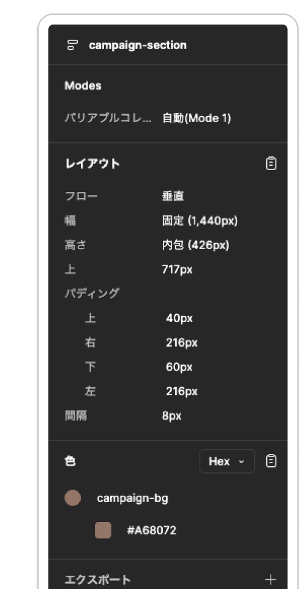
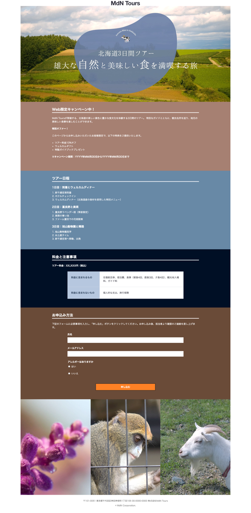

訓練校 IT スクール｜全6時間の集中授業
教科書がほぼ終わり（あとはアニメーション紹介くらい）。なので今までの総復習として、レッスン5の「Mdn Tours」サイトを自力で1ページまるごとコーディングする演習デー。教科書は開かず、配られたデザインだけを見て作る。明日(5/22)に先生が講師例を書く。
| 時間 | セクション |
|---|---|
| 冒頭（〜6分） | 課題の説明（Mdn Tours を作る） |
| 〃 | Figmaから画像をエクスポート（ロゴ/メイン/イメージ） |
| 残り全部 | デザイン仕様を読みながら自力コーディング |
| ゴール | 今日1日で1ページ完成（私の成果） |
教科書レッスン5の旅行サイト「Mdn Tours」を1ページ、これまで習ったタグ・CSSだけで再現する課題。デザインはFigmaで支給（クラスルームとチャットに共有）。「教科書を開かなくていい＝記憶と実力で作る」のがポイント。
サイトに使う画像はFigmaのデザインファイルから自分で書き出す（エクスポート）。対象のレイヤーを選択 → エクスポートを押す → 形式とサイズを選んで書き出し。
| 画像 | 形式 | 理由 |
|---|---|---|
| ロゴ | SVG | 小さくてもくっきり綺麗に映る（ベクター） |
| メインビジュアル | JPEG | 写真。透過の必要がないので |
| イメージエリア | JPEG | 写真。同上 |
配られたFigmaには、各パーツの幅・高さ・余白（パディング）・色がすべて数値で指定されています。これを読み取ってそのままCSSに写すと、デザイン通りに作れる。下は「campaign-section」の仕様の例。

#A68672。この数値をCSSにそのまま書く| Figmaの表記 | CSSでは |
|---|---|
| 幅 固定 (1,440px) | width: 1440px;（固定幅） |
| 幅 塗り (1,008px) | width: 100%; max-width: 1008px;（親いっぱい） |
| 高さ 内包 (426px) | 高さは中身に合わせる＝基本書かない（height auto） |
| パディング 上40 右216 下60 左216 | padding: 40px 216px 60px 216px; |
| 間隔 8px | flex/grid の gap: 8px; |
| 色 #A68672 | background: #A68672; |
「塗り」＝親要素いっぱいに広がる（fill）、「内包」＝中身ぶんだけ（hug）、「固定」＝数値で固定（fixed）。Figmaのオートレイアウト用語。
Mdn Tours を作るのに必要な、これまで習った技術の早見表。各リンクからその日の要約へ飛べます（目次の検索窓も活用）。
| パーツ | 使う技術 |
|---|---|
| 全体リセット | * { box-sizing: border-box; margin:0; }、リセットCSS |
| ヘッダー | header > div＋flex（space-between / align-items center）、ナビ nav>ul>li>a |
| メインビジュアル | 背景画像 background: url() center/cover、height:100vh、中央配置（position+translate or flex） |
| セクション | 幅 max-width＋margin:0 auto、見出し、padding |
| カード/画像ギャラリー | flex または grid（gap）、object-fit: cover |
| テーブル（料金表など） | table/tr/th/td、border-collapse |
| お問い合わせフォーム | form、input/label/select/textarea、max-width:800px |
| フッター | footer、住所 address、コピーライト small＋© |
| レスポンシブ | メディアクエリ @media (max-width:768px)、相対指定に切替 |
| 飾り | 疑似要素 ::before/::after、:hover、box-shadow |
外側→内側、上→下の順で。①リセット → ②ヘッダー → ③メインビジュアル → ④各セクション → ⑤フォーム → ⑥フッター → ⑦レスポンシブ。1ブロック作るごとにブラウザで確認。
支給デザインを見ながら、ヘッダー・メインビジュアル・本文・テーブル・画像ギャラリー・お問い合わせフォーム・フッターまで1ページまるごと再現。今まで5/11〜5/20で習った技術が全部入っています。

明日(5/22)に先生が講師例を書くので、自分のコードと見比べると学びが深い。特に「ここどうやるんだっけ」と詰まった所＝復習すべき所。詰まった箇所は目次の検索窓でキーワード検索すれば該当回にすぐ飛べます。
「教科書、開かなくていいです。」
→ これまでの積み重ねだけで1ページ作れる、という自信を促す一言。
「これ編集依頼しても私、却下しますからね。」
→ デザインに頼らず自力で作らせるための先生のユーモア。
「今日1日で完成させるという気概を持ってやってください。」
→ 演習デーの心構え。完璧でなくても最後まで通して作る経験が大事。